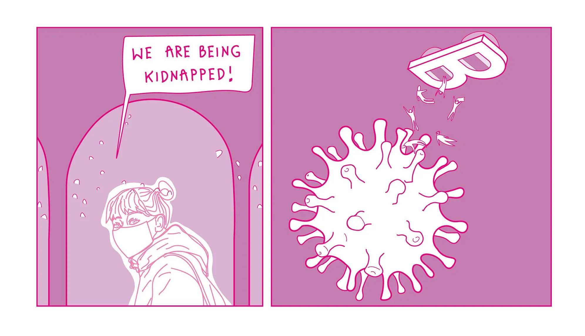
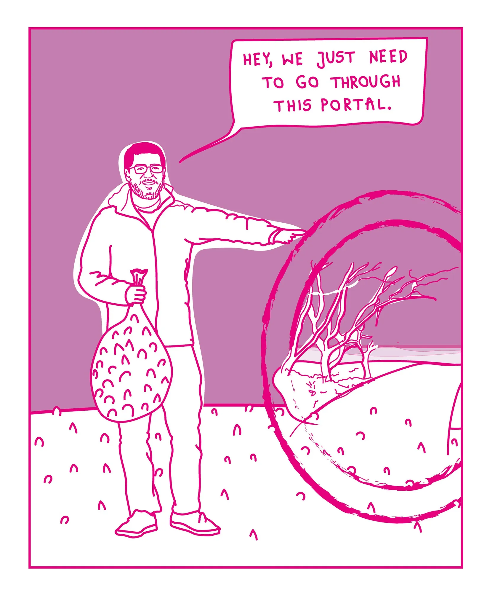

A Short Story of Bnieuws
Find out about the behind the scenes of the Bnieuws editorial team, who find themselves in a strange situation and need to find a way out.


Find out about the behind the scenes of the Bnieuws editorial team, who find themselves in a strange situation and need to find a way out.

